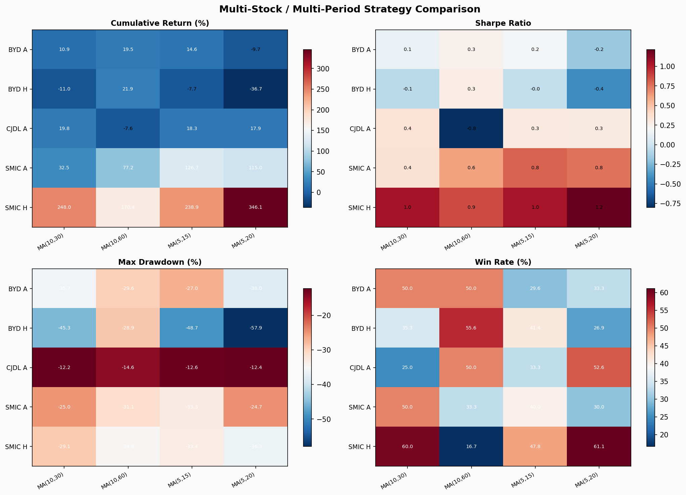
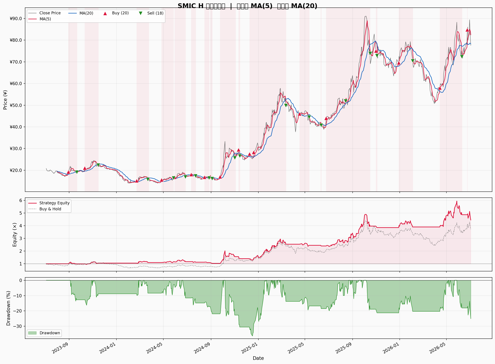
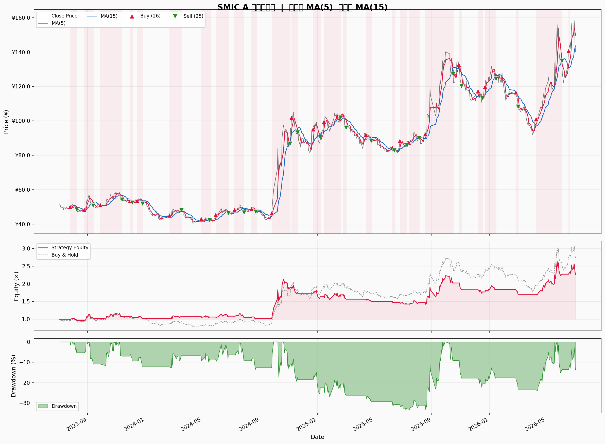
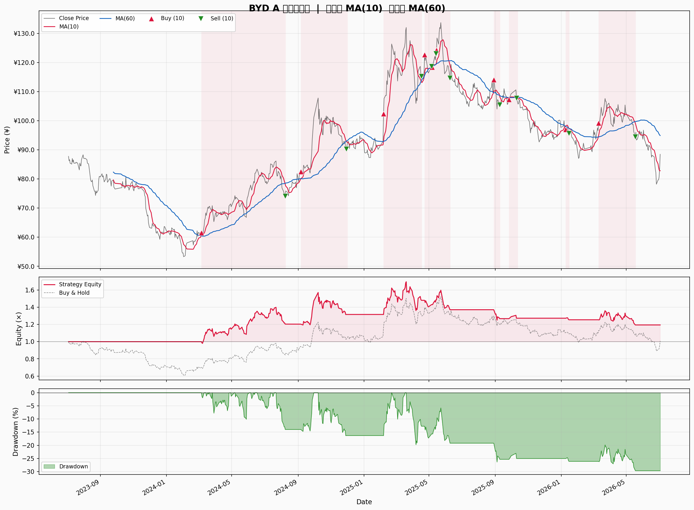
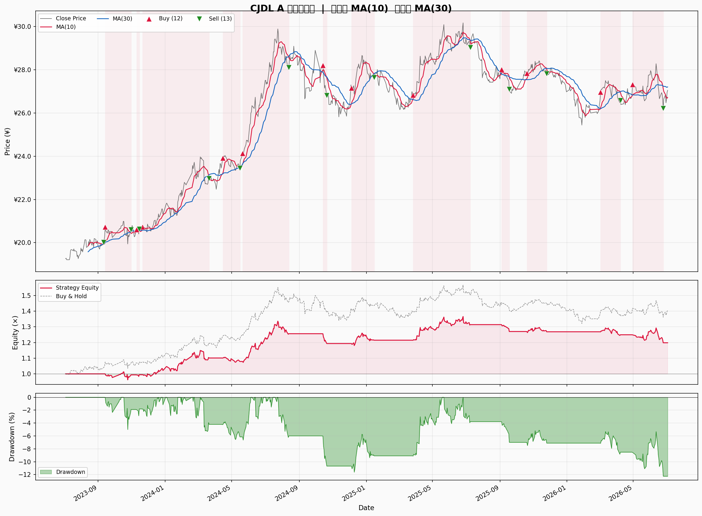

Dual Moving Average Crossover · 5 只股票 · 4 组周期 · 20 组回测
金叉买入 死叉卖出 2023-07 ~ 2026-07
| 股票 | 短MA | 长MA | 累计回报(%) | 年化收益(%) | 基准回报(%) | MDD(%) | 夏普比率 | 波动率(%) | 交易次数 | 胜率(%) | 平均盈利(%) | 平均亏损(%) |
|---|---|---|---|---|---|---|---|---|---|---|---|---|
| SMIC H | 5 | 20 | +346.05 | +66.97 | +273.08 | -36.29 | 1.215 | 49.56 | 18 | 61.1 | +31.05 | -5.73 |
| SMIC H | 10 | 30 | +247.96 | +53.34 | +273.08 | -29.05 | 1.047 | 49.16 | 10 | 60.0 | +35.35 | -8.37 |
| SMIC H | 5 | 15 | +238.86 | +51.96 | +273.08 | -33.40 | 1.035 | 48.57 | 23 | 47.8 | +20.81 | -5.38 |
| SMIC H | 10 | 60 | +170.41 | +40.64 | +273.08 | -34.81 | 0.868 | 49.81 | 6 | 16.7 | +21.36 | -9.33 |
| SMIC A | 5 | 15 | +126.68 | +33.11 | +172.92 | -33.28 | 0.801 | 42.96 | 25 | 40.0 | +18.75 | -4.42 |
| SMIC A | 5 | 20 | +114.97 | +30.67 | +172.92 | -24.73 | 0.755 | 43.28 | 20 | 30.0 | +9.05 | -5.44 |
| SMIC A | 10 | 60 | +77.20 | +22.14 | +172.92 | -31.09 | 0.616 | 40.33 | 6 | 33.3 | +12.61 | -12.98 |
| SMIC A | 10 | 30 | +32.46 | +10.32 | +172.92 | -25.01 | 0.364 | 39.92 | 14 | 50.0 | +9.75 | -4.64 |
| BYD H | 10 | 60 | +21.88 | +7.02 | -1.38 | -28.90 | 0.278 | 31.19 | 9 | 55.6 | +10.97 | -6.79 |
| CJDL A | 10 | 30 | +19.84 | +6.47 | +40.45 | -12.25 | 0.353 | 11.00 | 12 | 25.0 | +3.28 | -2.20 |
| BYD A | 10 | 60 | +19.48 | +6.36 | +0.81 | -29.62 | 0.251 | 23.98 | 10 | 50.0 | +9.37 | -4.92 |
| CJDL A | 5 | 15 | +18.32 | +6.00 | +40.45 | -12.61 | 0.307 | 11.27 | 27 | 33.3 | +1.99 | -1.81 |
| CJDL A | 5 | 20 | +17.94 | +5.89 | +40.45 | -12.41 | 0.294 | 11.49 | 19 | 52.6 | +4.26 | -2.48 |
| BYD A | 5 | 15 | +14.61 | +4.84 | +0.81 | -27.00 | 0.191 | 24.20 | 27 | 29.6 | +10.18 | -3.09 |
| BYD A | 10 | 30 | +10.95 | +3.67 | +0.81 | -35.66 | 0.143 | 23.73 | 14 | 50.0 | +7.68 | -5.36 |
| BYD H | 5 | 15 | -7.71 | -2.71 | -1.38 | -48.69 | -0.042 | 30.03 | 29 | 41.4 | +6.02 | -4.59 |
| CJDL A | 10 | 60 | -7.58 | -2.70 | +40.45 | -14.55 | -0.801 | 6.86 | 6 | 50.0 | +2.27 | -3.05 |
| BYD A | 5 | 20 | -9.69 | -3.47 | +0.81 | -38.05 | -0.166 | 23.23 | 27 | 33.3 | +6.45 | -4.37 |
| BYD H | 10 | 30 | -10.98 | -3.91 | -1.38 | -45.29 | -0.062 | 31.64 | 17 | 35.3 | +9.81 | -5.63 |
| BYD H | 5 | 20 | -36.68 | -14.50 | -1.38 | -57.94 | -0.426 | 31.85 | 26 | 26.9 | +5.58 | -5.05 |

累计回报 · 夏普比率 · 最大回撤 · 胜率 — 四维对比



